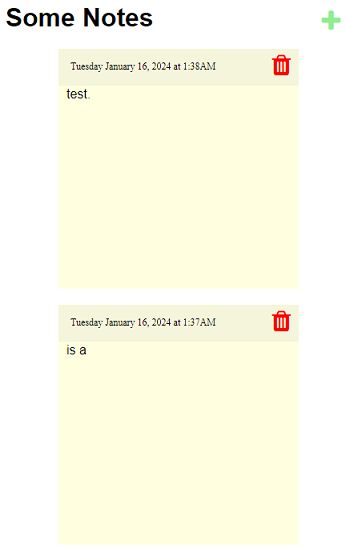

My Projects
Back
 BattleGame
BattleGame
When I was in high school, I played a Facebook game that was a turn based Role-Playing-Game (RPG) called Marvel Avengers Alliance.
I enjoyed my time in that game and it made myself a fan of turn-based RPGs, so much that it inspired me to make my own game like one.
This project is my first game I have ever made in my free time called BattleGame. It started in the Summer of 2016.
It is coded entirely in C++, and plays through the command line with user input.
Its gameplay is similar to a turn-based RPG but is entirely through text.
It has different weapons with attacks that are tied to each.
Each enemy you defeat will increase your stats based on their strength.
 Moolah
Moolah
In Summer of 2018, I was involved in a community or "guild" in the Massive-Multiplyer-Online-Roleplaying-Game (MMORPG) called Black Desert Online.
A friend of mine in the community was talking to me about an issue involving keeping track of the member's contribution from an activity in the game called Sea Monster Hunting.
Both of us came up with the idea of creating a bot for the social chatting program called Discord that can keep track of items gathered through user input commands.
She provided the ideas of what the bot should behave like while I created the bot.
The bot is called Moolah and is coded in Python 3.6. It uses the Discord API to take in user input commands through the Discord chat.
When the user sends the input through the Discord chat, the bot will take that info and send it to a Google Sheet using the Sheets API.
The bot is able to Add/Subtract items, see a member's total contribution represented as a money amount, and give their items to other members.
Skarnerisms
I have a friend that goes by the name of "Skarner" online. He says some rather "unique" things when we talk.
The group of friends I talk to joked about recording the things that he says for the memories.
But the Discord quote bot that we used to use was taken out of the server and potentially shut down.
So, I had the idea to challenge myself to create a Discord quote bot with similar features that are used by many other bots.
I call the bot Skarnerism as this is a bot to be filled with quotes from him only.
It operates with Discord commands from the user and interacts with an SQL database to store quotes and the date of recording.
When the list gets too long, it uses the Discord reaction function to add left and right arrow, using them as a way to scroll the list.

Notes Web App
Web development is a form of programming that I struggled with, especially with the design of a webpage in HTML/CSS.
So for a good portion of 2023 I took it upon myself to practice web development, using HTML/CSS/Javascript.
Full credit to my ideas for Web App projects goes to florinpop17 on GitHub.
One of my self projects was a Notepad App that operates in the web browser.
I am particularly proud of myself for this one due to how well the sticky notes look and the functions of the App.
Each note looks really close to how a sticky note would look like in real life.
Notes can be deleted, added, and edited.
At the top of each note shows the last date and time it was updated.
The list of notes would be order by last updated, and the order would change in real time.
Data is saved within Javascript session storage, recording things like the note contents and last time updated.
 Fighter
Fighter
A friend of mine has been into the fighting game genre his whole life, I was the complete opposite.
In 2022, I was encourage to finally try out fighting games by that same friend, starting with an simple game called FOOTSIES.
After that, we then ventured into a new fighting game called Guilty Gear Strive.
Through that game I saw how relatively easy it was for me to pick up and learn while also having intricacies that makes it enjoyable to learn and rewarding to play.
This whole experience inspired me to create a fighting game to not only familiarize myself with the genre, but to also discover aspects of C# and game development that I never thought of.
Developed in the Unity Engine, Fighter was created to be a fighting game using the sprites and map of Guilty Gear X2 #Reload.
I learned and implemented some core game development concepts, such as a GameManager holding the status of the game state overall like the health of each player as well as scorekeeping,
and using Prefabs to save time on creating and loading assets that will be used in multiple scenes.
The organization of scripts for the functions of a character is a concept that I had to maintain as the project got larger and I feel is very important to programming overall.
I wish to continue this project over time in order to explore more design concepts of game development and programming in general!